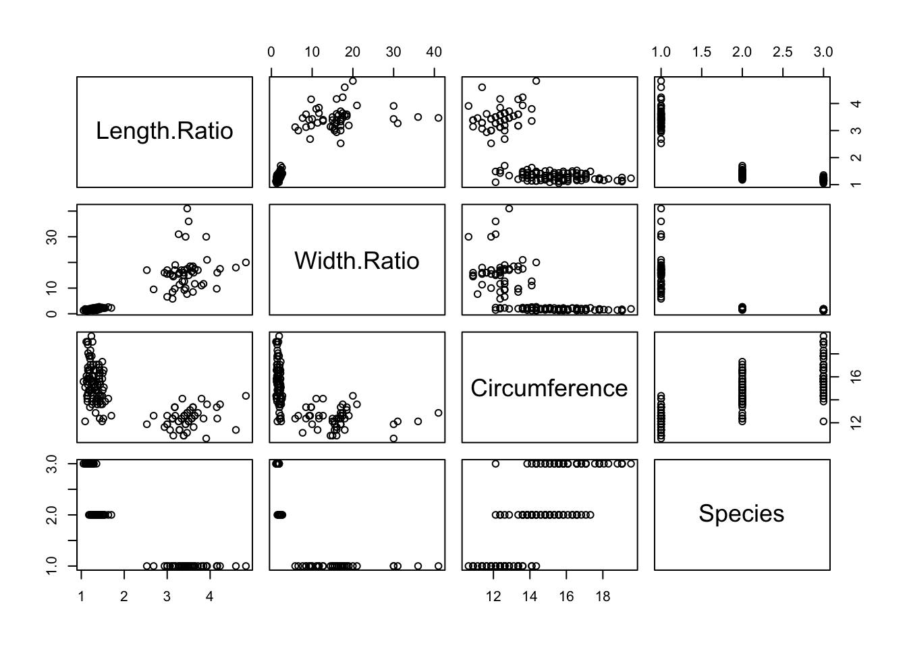

Version 3 : Parameterize
Jenna Landy
# use install.packages FIRST TIME ONLY
update.packages(
params$package_location,
repos=NULL,
type="source"
)
library(irisproject)
library(dplyr)
library(ggplot2)head(iris)## Sepal.Length Sepal.Width Petal.Length Petal.Width Species Length.Ratio Width.Ratio
## 1 4.209616e-07 2.888952e-07 1.155581e-07 1.65083e-08 setosa 3.642857 17.50
## 2 4.044533e-07 2.476245e-07 1.155581e-07 1.65083e-08 setosa 3.500000 15.00
## 3 3.879450e-07 2.641328e-07 1.073039e-07 1.65083e-08 setosa 3.615385 16.00
## 4 3.796909e-07 2.558786e-07 1.238122e-07 1.65083e-08 setosa 3.066667 15.50
## 5 4.127075e-07 2.971494e-07 1.155581e-07 1.65083e-08 setosa 3.571429 18.00
## 6 4.457241e-07 3.219118e-07 1.403205e-07 3.30166e-08 setosa 3.176471 9.75
## Circumference
## 1 1.322490e-06
## 2 1.270628e-06
## 3 1.218765e-06
## 4 1.192834e-06
## 5 1.296559e-06
## 6 1.400283e-06Data manipulation steps:
- Convert measurements from centemeters to inches
- Compute two ratio features: ratio of lengths (sepal : petal) and ratio of widths (sepal : petal)
- Create a new feature: circumference of the smallest circle that could circumscribe the flower (using the larger length as the radius).
if (params$convert_cm) {
iris <- iris %>%
convert_measurements(1:4)
}
iris <- iris %>%
compute_ratios() %>%
compute_circumference()head(iris)## Sepal.Length Sepal.Width Petal.Length Petal.Width Species Length.Ratio Width.Ratio
## 1 1.718211e-07 1.179164e-07 4.716657e-08 6.738081e-09 setosa 3.642857 17.50
## 2 1.650830e-07 1.010712e-07 4.716657e-08 6.738081e-09 setosa 3.500000 15.00
## 3 1.583449e-07 1.078093e-07 4.379753e-08 6.738081e-09 setosa 3.615385 16.00
## 4 1.549759e-07 1.044403e-07 5.053561e-08 6.738081e-09 setosa 3.066667 15.50
## 5 1.684520e-07 1.212855e-07 4.716657e-08 6.738081e-09 setosa 3.571429 18.00
## 6 1.819282e-07 1.313926e-07 5.727369e-08 1.347616e-08 setosa 3.176471 9.75
## Circumference
## 1 5.397918e-07
## 2 5.186235e-07
## 3 4.974552e-07
## 4 4.868710e-07
## 5 5.292076e-07
## 6 5.715443e-07Pairs plot of select variables
plot_pairs_of <- strsplit(params$plot_pairs_of, ",")[[1]] %>% trimws()Variables included:
- Sepal.Length
- Sepal.Width
- Petal.Length
- Petal.Width
- Length.Ratio
- Width.Ratio
- Circumference
- Species
pairs(iris[,plot_pairs_of])
Plot of circumference and length ratio by species
iris %>% ggplot(aes(
x = Circumference,
y = Length.Ratio,
color = Species
)) +
geom_point() +
theme_classic() +
theme(
legend.position = 'top',
legend.justification = 'left'
)